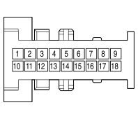

M070A CLIMATE CONTROL SYSTEM CONTROL UNIT (DASHBOARD)
- Path
- Electrical equipment > 3 CONNECTORS > M INTERMITTENT AND TIMED ELECTRONIC DEVICES > M070 CLIMATE CONTROL SYSTEM CONTROL UNIT > M070A CLIMATE CONTROL SYSTEM CONTROL UNIT (DASHBOARD)
- Kind
- connector pinout (pin -> wire colour -> other end)
- Applies to
- engines: 2.0 16V JTD, 2.2 16V JTD; all production periods; only with equipment: MY 2005
- Interactive page
- https://sloeber94.github.io/elrnDB-fUlss/en/#/179010756
Applies to: engines: 2.0 16V JTD, 2.2 16V JTD; all production periods; only with equipment: MY 2005

Wiring | Colour |
|---|---|
NERO (black) |
Pin | Cable | Destination | |||
|---|---|---|---|---|---|
Sec.. | Colour | Node | Connect. | Pin | |
1 | 0,5 | 8110 | 5 | ||
2 | 0,5 | 8101 | 9 | ||
3 | 0,5 | 8053 | 2 | ||
4 | 0,5 | 8074 | 14 | ||
5 | 0,5 | 8073 | 13 | ||
6 | 0,5 | 8086 | 11 | ||
7 | 0,5 | 8087 | 6 | ||
10 | 0,5 | ZECLM | X | 13 | |
6 | |||||
4 | |||||
1 | |||||
11 | 0,5 | V8060 | X | 1 | |
2 | |||||
4 | |||||
7 | |||||
1 | |||||
12 | 0,5 | C8060 | X | 1 | |
See M093D STEERING WHEEL NODE CONTROL UNIT (NVO) (DASHBOARD) | 4 | ||||
1 | |||||
13 | 0,5 | 8085 | 12 | ||
14 | 0,5 | 9025H | X | 6 | |
10 | |||||
2 | |||||
4 | |||||
13 | |||||
15 | 0,5 | 9024H | X | 12 | |
8 | |||||
5 | |||||
2 | |||||
10 | |||||
16 | 0,5 | GV - M8060 | X | 1 | |
7 | |||||
2 | |||||
3 | |||||
3 | |||||
3 | |||||
See M093D STEERING WHEEL NODE CONTROL UNIT (NVO) (DASHBOARD) | 3 | ||||
1 | |||||
3 | |||||
1 | |||||
18 | 0,5 | 8059 | 10 | ||
Topics linked from this page (19)
- 20 DASHBOARD
- C020A PASSENGER SIDE DASHBOARD EARTH (DASHBOARD)
- D001 FRONT/DASHBOARD COUPLING
- D020C DASHBOARD/REAR COUPLING (DASHBOARD)
- E050 INSTRUMENT PANEL
- G030 GLOVE COMPARTMENT LIGHT
- G035 Ashtray light
- H020 HAZARD WARNING LIGHTS SWITCH
- H037A GEAR CONTROLS (DASHBOARD)
- I115 STABILITY CONTROL SYSTEM SWITCH
- M001D BODY COMPUTER (DASHBOARD)
- M001G BODY COMPUTER (DASHBOARD)
- M093D STEERING WHEEL NODE CONTROL UNIT (NVO) (DASHBOARD)
- M140 WARNING LIGHTS AND MILOMETER CONTROL UNIT (NSO)
- M160 CONNECT CONTROL PANEL
- P020D RADIO (DASHBOARD)
- P050 CIGAR LIGHTER / CURRENT SOCKET
- Q011B AIR BAG IN DASHBOARD (PASSENGER SIDE) (DASHBOARD)
- R010 MULTIPLE DIAGNOSTIC COUPLING
Topics that link to this page (43)
- C020A PASSENGER SIDE DASHBOARD EARTH (DASHBOARD)
- C020A PASSENGER SIDE DASHBOARD EARTH (DASHBOARD)
- D001 FRONT/DASHBOARD COUPLING (DASHBOARD)
- D001 FRONT/DASHBOARD COUPLING (DASHBOARD)
- D001 FRONT/DASHBOARD COUPLING(FRONT)
- D020A DASHBOARD/REAR COUPLING (DASHBOARD)
- D020C DASHBOARD/REAR COUPLING (DASHBOARD)
- D020C DASHBOARD/REAR COUPLING (DASHBOARD)
- D020C DASHBOARD/REAR COUPLING (DASHBOARD)
- D020C DASHBOARD/REAR COUPLING (DASHBOARD)
- E050 INSTRUMENT PANEL (DASHBOARD)
- E050 INSTRUMENT PANEL (DASHBOARD)
- E050 INSTRUMENT PANEL (DASHBOARD)
- E050 INSTRUMENT PANEL (DASHBOARD)
- G030 GLOVE COMPARTMENT LIGHT (DASHBOARD)
- G035 Ashtray light (DASHBOARD)
- G035 Ashtray light (DASHBOARD)
- H020 HAZARD WARNING LIGHTS SWITCH (DASHBOARD)
- H037A GEAR CONTROLS (DASHBOARD)
- H037B GEAR CONTROLS (DASHBOARD)
- I115 STABILITY CONTROL SYSTEM SWITCH (DASHBOARD)
- I115 STABILITY CONTROL SYSTEM SWITCH(FACIA)
- M001D BODY COMPUTER (DASHBOARD)
- M001D BODY COMPUTER (DASHBOARD)
- M001D BODY COMPUTER (DASHBOARD)
- M001D BODY COMPUTER (DASHBOARD)
- M001G BODY COMPUTER (DASHBOARD)
- M093D STEERING WHEEL NODE CONTROL UNIT (NVO) (DASHBOARD)
- M093D STEERING WHEEL NODE CONTROL UNIT (NVO) (DASHBOARD)
- M140 WARNING LIGHTS AND MILOMETER CONTROL UNIT (NSO) (DASHBOARD)
- M140 WARNING LIGHTS AND MILOMETER CONTROL UNIT (NSO) (DASHBOARD)
- M140 WARNING LIGHTS AND MILOMETER CONTROL UNIT (NSO) (DASHBOARD)
- M140 WARNING LIGHTS AND MILOMETER CONTROL UNIT (NSO) (DASHBOARD)
- M160 CONNECT CONTROL PANEL (DASHBOARD)
- M160 CONNECT CONTROL PANEL (DASHBOARD)
- M172 MULTIFUNCTION SCREEN NODE (DASHBOARD)
- P020A RADIO (DASHBOARD)
- P020D RADIO (DASHBOARD)
- P020D RADIO (DASHBOARD)
- P050 CIGAR LIGHTER / CURRENT SOCKET (DASHBOARD)
- P050 CIGAR LIGHTER / CURRENT SOCKET (DASHBOARD)
- Q011B AIR BAG IN DASHBOARD (PASSENGER SIDE) (DASHBOARD)
- R010 MULTIPLE DIAGNOSTIC COUPLING (DASHBOARD)